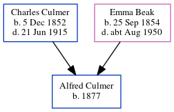

Alfred Culmer 1877 -
[ Home ] | [ Calendar ] | [ Surnames Index ] | [ Errors ] | [ Family History ]A farm servant and the child of Charles Culmer (an agricultural labourer) and Emma Beak, Alfred Culmer, the first cousin twice-removed on the mother's side of Nigel Horne, was born in St Nicholas-at-Wade, Kent, England in 18771,2,3 and baptised there on 17 Jun 1877.
During his life, he was living at The Square, Stourmouth, Kent, England on 3 Apr 18815; and in Westmarsh, Kent, England on 5 Apr 18914.
Parents
- Charles was born on 5 Dec 1852
- Emma was born on 25 Sept 1854
Citations
- 1881 England Census Online publication - Provo, UT, USA: The Generations Network, Inc., 2004. 1881 British Isles Census Index provided by The Church of Jesus Christ of Latter-day Saints © Copyright 1999 Intellectual Reserve, Inc. All rights reserved. All use is subject to the
- 1891 England Census Online publication - Provo, UT, USA: The Generations Network, Inc., 2005.Original data - Census Returns of England and Wales, 1891. Kew, Surrey, England: The National Archives of the UK (TNA): Public Record Office (PRO), 1891. Data imaged from The National
- England & Wales, FreeBMD Birth Index, 1837-1915 Online publication - Provo, UT, USA: The Generations Network, Inc., 2006.Original data - General Register Office. England and Wales Civil Registration Indexes. London, England: General Register Office. © Crown copyright. Published by permission of the Cont
- 1891 England, Wales & Scotland Census - Findmypast (was age 13 and the son of the head of the household)
- 1881 England, Wales & Scotland Census - Findmypast (was age 3 and the son of the head of the household)
Media
England & Wales births 1837-2006 - BMD/B/1877/3/AZ/000129/054
1881 England, Wales & Scotland Census - GBC/1881/0004883615
Family Tree
Map
Generated by ged2site. Last updated on Jul 3, 2024
Known Issues
Date of baptism (17 Jun 1877) before date of birth (1877)
May have been living with mother on 5 Apr 1891, but the addresses don't match or aren't detailed enough to be sure
May have been living with father on 5 Apr 1891, but the addresses don't match or aren't detailed enough to be sure